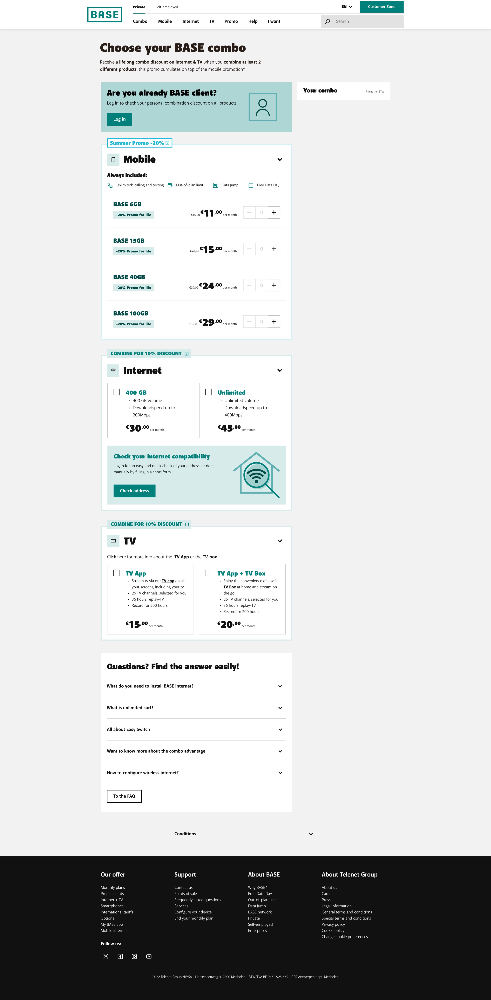
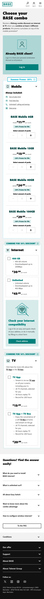
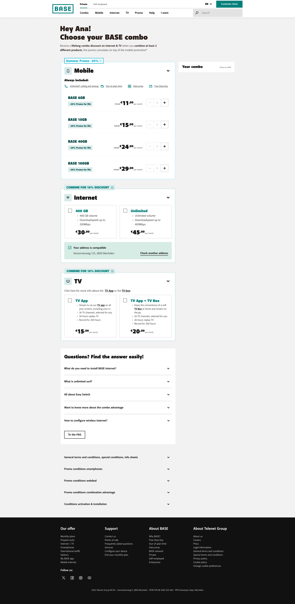
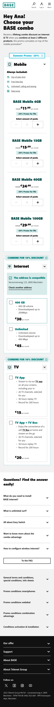
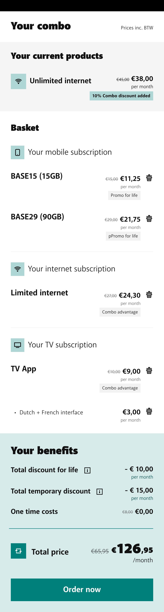
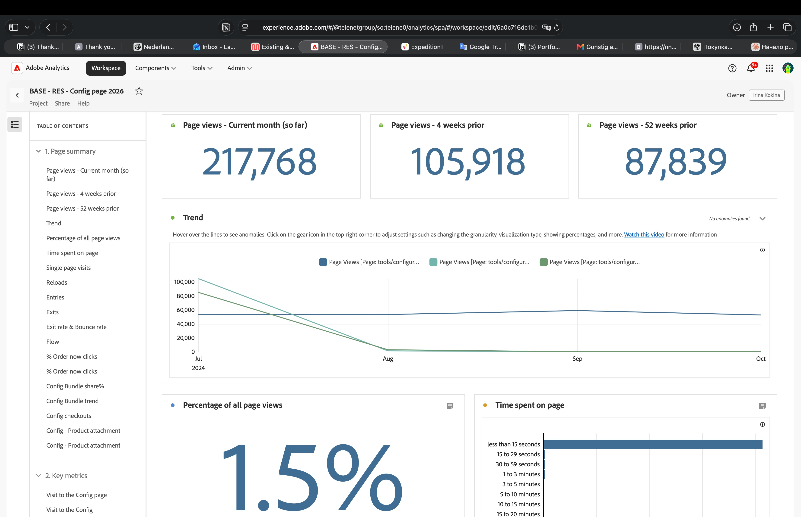
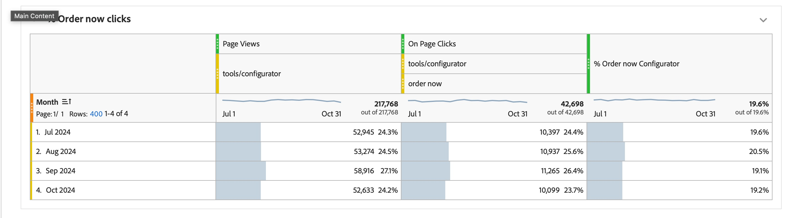
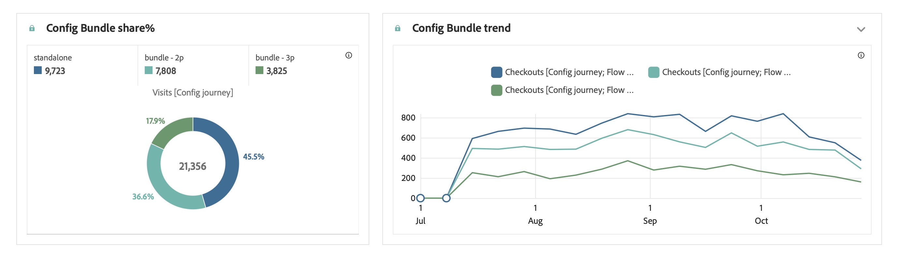
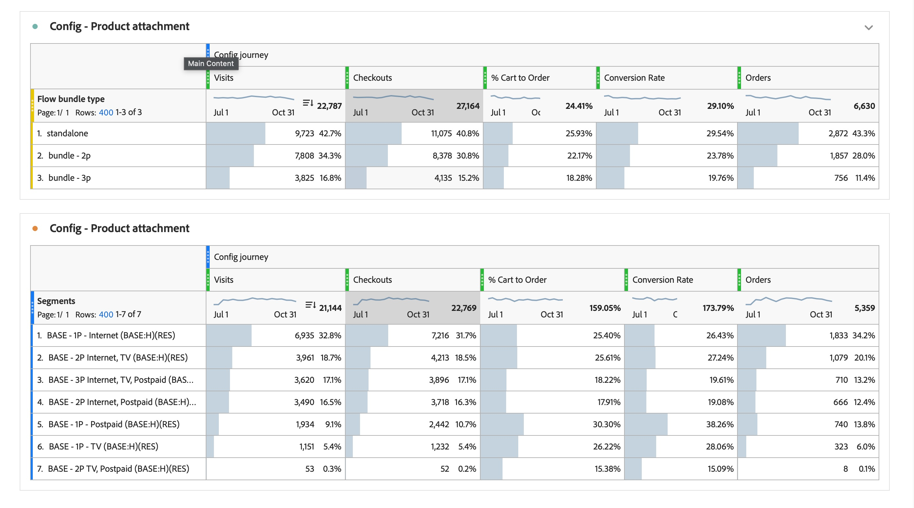
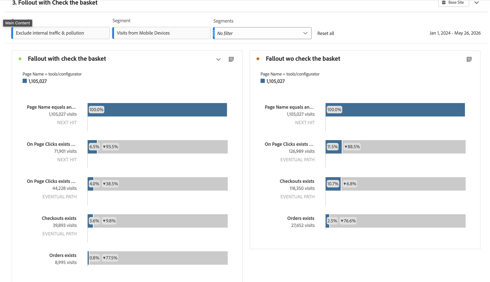

BASE · Telco · B2C · 2023–2024 · 9 months
BASE was mobile-only. No product pages, no user trust, no design patterns to build from. I led design end-to-end — navigation, three landing pages, and a bundle configurator — in 9 months. Sales exceeded plan 3× in 2 months.
Sole UX Designer. Owned full process from discovery to launch — research, strategy, all design surfaces, stakeholder workshops, usability testing, and post-launch iteration.
Figma · Adobe Analytics · ContentSquare · Optimal Workshop · Maze · ContextWeb
BASE was a single-product company. Every system, every page, every user mental model was built around mobile. Adding Internet and TV wasn't a feature update — it was a business transformation.
The challenge had three layers:
Product
No pages existed. No way to find, compare, or buy Internet or TV. No design patterns to build from.
Perception
Users didn't believe BASE could be an internet provider. Price and features weren't the barrier — trust was.
Mental model
BASE was the first telco in Belgium to sell Internet and TV as separate products, not forced bundles. We couldn't borrow from convention — we had to build user understanding of an entirely new concept while simultaneously building the product.
Turn a single-product mobile operator into a multi-product provider — from zero, in 9 months, for up to 10 million users in Belgium.
Tree test — navigation structure
Tested 3 navigation models with existing BASE customers before any design work.
→ Users expected "Combine" as a top-level standalone entry, not nested under Mobile. This reshaped the entire nav structure — counterintuitive to stakeholders but validated by data.
Qualitative interviews — 3 waves
Before design, mid-process, and post-launch with BASE customers and non-customers.
→ Trust was the primary barrier. "I didn't know BASE did internet." Shifted tone of voice on all three landing pages from product-focused to credibility-first.
Usability testing — configurator format
One-page vs stepper — tested with real users before building.
→ Stepper felt like commitment. Users hesitated to go back. One-page won — users could see and adjust everything simultaneously.
Usability testing — promo comprehension
Full configurator flow with external research team — promo logic, login push, basket integration.
→ Users didn't understand when the discount applied. Redesigned pricing summary to show savings at every step, not just checkout.
A/B testing + ContentSquare post-launch
Navigation variants, landing page components, heatmaps on live product.
→ Tree-test navigation won. ContentSquare identified friction points that informed post-launch iterations.
Why a configurator instead of a forced bundle?
Research showed forced bundles no longer work — users want to self-select and control what they buy. The configurator was designed around that insight: choose any standalone product, and if you pick 2 or more, you automatically get 10% discount for life on each. The goal wasn't to push bundles — it was to make individual choice transparent and reward combination naturally. This also opened a clear upsell path: users who came for one product could see what adding another would cost them in real time.
Why one page, not a stepper — and why 5 states?
Research confirmed bundles don't work well when imposed. People want transparency and control. The configurator lives on one page precisely for this reason — new customers see exactly how the discount works and what comes next; existing customers see how their current products affect future discounts. The 5 states let us show each user only what's relevant to them, making the pricing logic clear rather than hidden.
How do you design for a brand users don't yet trust as a provider?
Every design decision was informed by one core research finding: users didn't believe BASE could be a reliable internet or TV provider. This shaped the tone of voice on landing pages, the order of information in the configurator, and the credibility signals throughout the flow. We designed trust before selling product — and validated this approach with qualitative interviews at three stages of the project.
Design — selected screens
01 — Configurator, not logged in
Anonymous users see the full product selection — Mobile, Internet, and TV — on one page. The key design goal: make the impact of each additional product on the final price immediately visible. Every product added triggers the Combo Promo −10% for life, shown in real time. The page is built to let users understand the discount logic themselves, without explanation.


02 — Configurator, logged in
Logged-in users see their existing products first — and immediately how those products affect the discount on anything they add. This is the core upsell mechanic: an existing mobile customer sees that adding Internet or TV unlocks the Combo Promo −10% for life on all their products, including the ones they already pay for. Existing context makes the value of adding a product concrete, not abstract.


03 — Basket with combo discount applied
The basket shows the full financial picture: each product with its original price struck through, combo advantage applied, and total lifetime savings visible before committing. "Total discount for life −€10/month" makes the promo concrete and immediate — reducing hesitation at the final step.

217,768 visits in the current month — up from 87,839 a year prior (+148%). The configurator established itself as a primary entry point for product discovery across the BASE site, representing 1.5% of all page views.

Stable ~20% conversion rate across all four months — 42,698 "Order now" clicks from 217,768 visits. Consistency across months confirms this isn't a launch spike but a sustained product metric.

54.5% of users chose a bundle (2 or more products). The promo mechanic — 10% discount for life when combining — drove more than half of all configurator visits toward higher-LTV combinations. Standalone represented only 45.5%.

Internet standalone led with 26.43% conversion and 1,833 orders (34.2% of all orders). Bundle 2p and 3p followed. Overall cart-to-order rate: 29.1%. The segment breakdown validated the 5-state account logic — each segment converted differently, confirming personalisation was the right approach.

From 1.1M configurator visits: 10.7% reached checkout (118,350), 2.5% completed an order (27,652). The "without basket" path shows 11.5% clicked through directly to checkout — a faster path for returning or high-intent users built intentionally into the logged-in flow.

Qualitative
Post-launch interviews confirmed brand perception shift — users now associating BASE with internet. The trust problem we designed for had been solved.
What I learned
Start with development constraints before designing — understanding technical limitations early prevents rework late. And divide usability testing into small, focused tests rather than trying to cover all flows at once. Targeted tests surface sharper insights and are easier to act on.
What I'd do differently
Start accessibility audit earlier. Legal constraints late in the project caused rework on several components — earlier involvement would have prevented that.
Business impact
BASE transformed from a single-product mobile operator into a multi-product provider. Every Internet or TV subscriber is now a cross-sell-ready customer with higher LTV.